<!DOCTYPE html>
<html lang="zh-CN">
<head><meta name="generator" content="Hexo 3.9.0">
  <meta charset="utf-8">
  <meta content="width=device-width, initial-scale=1.0, maximum-scale=1.0, user-scalable=0" name="viewport">
  
  <title itemprop="name">python图形界面学习 | lovelves</title>
  
    <link rel="shortcut icon" href="/images/favicon.ico">
  
  <meta http-equiv="x-dns-prefetch-control" content="on">
  <link rel="stylesheet" href="https://fonts.googleapis.com/css?family=Noto+SerifMerriweather|Merriweather+Sans|Source+Code+Pro|Ubuntu:400,700|Noto+Serif+SC" media="all">
  <link rel="dns-prefetch" href="//cdn.jsdelivr.net">
  <link rel="stylesheet" id="saukra_css-css" href="/css/style.css" type="text/css" media="all">
  <link rel="stylesheet" href="/css/lib.min.css" media="all">
  <link rel="stylesheet" href="/css/font.css" media="all">
  <link rel="stylesheet" href="/css/insight.css" media="all">
  <link rel="stylesheet" href="/css/jquery.fancybox.min.css" media="all">
  <link rel="stylesheet" href="/css/zoom.css" media="all">
  <link rel="stylesheet" type="text/css" href="/css/sharejs.css">
<!--   <link rel="stylesheet" id="saukra_css-css" href="https://2heng.xin/wp-content/cache/autoptimize/css/autoptimize_ad42a61f4c7d4bdd9f91afcff6b5dda5.css
" type="text/css" media="all"> -->
  <script src="https://cdn.jsdelivr.net/npm/jquery/dist/jquery.min.js"></script>
  <script type="text/javascript" src="/live2d-widget/a.js"></script>
  <script src="/live2d-widget/autoload.js"></script>
   <link rel="stylesheet" href="https://cdn.jsdelivr.net/npm/font-awesome/css/font-awesome.min.css">
  <script>
  /*Initial Variables*/
  var mashiro_option = new Object();
  var mashiro_global = new Object();
  mashiro_option.NProgressON = true;
  /* 
   * 邮箱信息之类的东西可以填在这里，这些js变量基本都作用于sakura-app.js
   * 这样的设置仅是为了方便在基于PHP开发的主题中设置js变量，既然移植到了Node上，我想或许可以精简这一逻辑吧
   */
  mashiro_option.email_domain = "";
  mashiro_option.email_name = "";
  mashiro_option.cookie_version_control = "";
  mashiro_option.qzone_autocomplete = false;
  mashiro_option.site_name = "lovelves的博客";
  mashiro_option.author_name = "的博客";
  mashiro_option.site_url = "www.lovelves.cn";
  mashiro_option.v_appId = "eBIOWlNSti1cF7QQKTdnAMF5-gzGzoHsz";
  mashiro_option.v_appKey = "vWB0QiSYnTUHzNWujmBXrXBF";
  mashiro_option.mathjax = "1";
  mashiro_option.qq_api_url = "https://api.mashiro.top/qqinfo/"; 
  mashiro_option.qq_avatar_api_url = "https://api.mashiro.top/qqinfo/";

  // mashiro_option.jsdelivr_css_src = "https://cdn.jsdelivr.net/gh/moezx/cdn@3.4.5/css/lib.min.css";
  // mashiro_option.float_player_on = true;

  /*End of Initial Variables*/
  </script>
  <script type="text/javascript">
  var bg = "https://pic4.zhimg.com/v2-7e3bd74fc2385af3251553adceec67a8_r.jpg?source=1940ef5c,https://pic4.zhimg.com/v2-23fe50c0f5c916a8a319e5afdec5b044_r.jpg?source=1940ef5c,https://pic4.zhimg.com/v2-ee4e5d2641987212a1b874fc492fc55c_r.jpg?source=1940ef5c,https://cdn.jsdelivr.net/gh/lingdas/note/img/16.jpg,https://cdn.jsdelivr.net/gh/lingdas/note/img/13.jpg,https://cdn.jsdelivr.net/gh/lingdas/note/img/10.jpg,https://cdn.jsdelivr.net/gh/lingdas/note/img/20.jpg".split(",");
  var bgindex = Math.floor(Math.random()*bg.length);
  if (!!window.ActiveXObject || "ActiveXObject" in window) { //is IE?
    alert('朋友，IE浏览器未适配哦~');
  }
  </script>
  <style type="text/css">
  .hljs-ln{border-collapse:collapse}.hljs-ln td{padding:0}.hljs-ln-n:before{content:attr(data-line-number)}
  </style>
  <style type="text/css">.site-top .lower nav{display:block !important;}.author-profile i,.post-like a,.post-share .show-share,.sub-text,.we-info a,span.sitename,.post-more i:hover,#pagination a:hover,.post-content a:hover,.float-content i:hover{color:#FE9600}.feature i,.download,.navigator i:hover,.links ul li:before,.ar-time i,span.ar-circle,.object,.comment .comment-reply-link,.siren-checkbox-radio:checked + .siren-checkbox-radioInput:after{background:#FE9600}::-webkit-scrollbar-thumb{background:#FE9600}.download,.navigator i:hover,.link-title,.links ul li:hover,#pagination a:hover,.comment-respond input[type='submit']:hover{border-color:#FE9600}.entry-content a:hover,.site-info a:hover,.comment h4 a,#comments-navi a.prev,#comments-navi a.next,.comment h4 a:hover,.site-top ul li a:hover,.entry-title a:hover,#archives-temp h3,span.page-numbers.current,.sorry li a:hover,.site-title a:hover,i.iconfont.js-toggle-search.iconsearch:hover,.comment-respond input[type='submit']:hover{color:#FE9600}.comments .comments-main{display:block !important;}.comments .comments-hidden{display:none !important;}background-position:center center;background-attachment:inherit;}
  </style>
</head>
</html>
<body class="page-template page-template-user page-template-page-analytics page-template-userpage-analytics-php page page-id-1297 chinese-font serif isWebKit">
  <div class="scrollbar" id="bar">
  </div>
  <a href="#" class="cd-top faa-float animated"></a>
  <section id="main-container">
    <div class="headertop ">
  <div id="banner_wave_1"></div>
  <div id="banner_wave_2"></div>
  <figure id="centerbg" class="centerbg">
    <div class="focusinfo no-select">
      <div class="header-tou">
        <a href="www.lovelves.cn">
          
        </a>
      </div>
      <div class="header-info">
        <p>Live your life with passion! With some drive!</p>
        <div class="top-social_v2">
          <li id="bg-pre">
            
          </li>
          
          <li id="bg-next">
            
          </li>
        </div>
      </div>
    </div>
  </figure>
  <div id="video-container" style="">
    <video style="object-fit: fill" id="bgvideo" class="video" video-name="" src="" width="auto" preload="auto">
    </video>
    <div id="video-btn" class="loadvideo videolive">
    </div>
    <div id="video-add">
    </div>
    <div class="video-stu">
    </div>
  </div>
  <div class="headertop-down faa-float animated" onclick="headertop_down()">
    <span>
      <i class="fa fa-chevron-down" aria-hidden="true">
      </i>
    </span>
  </div>
</div>
    <div id="page" class="site wrapper">
      <header class="site-header no-select gizle sabit" role="banner">
  <div class="site-top">
    <div class="site-branding">
      <span class="site-title">
        <span class="logolink moe-mashiro">
          <a href="/">
            <span class="sakurasono">lovelves</span>
            <span class="shironeko">的博客</span>
          </a>
        </span>
      </span>
    </div>
    <div class="searchbox search-form-submit">
      <i class="iconfont js-toggle-search iconsearch icon-search">
      </i>
    </div>
    <div id="show-nav" class="showNav mobile-fit">
      <div class="line line1">
      </div>
      <div class="line line2">
      </div>
      <div class="line line3">
      </div>
    </div>
    <div class="lower-cantiner">
      <div class="lower">
        <nav class="mobile-fit-control hide">
          <ul id="menu-new" class="menu">
            
              <li>
                <a href="/">
                  <span class="faa-parent animated-hover">
                    <i class="fa  fa-fort-awesome faa-shake" aria-hidden="true"></i>
                    首页
                  </span>
                </a>
                
              </li>
            
              <li>
                <a href="/archives">
                  <span class="faa-parent animated-hover">
                    <i class="fa  fa-archive faa-shake" aria-hidden="true"></i>
                    归档
                  </span>
                </a>
                
                  <ul class="sub-menu">
                    
                      <li>
                        <a href="/categories/技术/">
                          <i class="fa fa-code" aria-hidden="true"></i>
                          技术
                        </a>
                      </li>
                    
                  </ul>
                
              </li>
            
              <li>
                <a href="javascript:;">
                  <span class="faa-parent animated-hover">
                    <i class="fa  fa-list-ul faa-vertical" aria-hidden="true"></i>
                    清单
                  </span>
                </a>
                
                  <ul class="sub-menu">
                    
                      <li>
                        <a href="/booklist/">
                          <i class="fa fa-th-list faa-bounce" aria-hidden="true"></i>
                          笔记
                        </a>
                      </li>
                    
                      <li>
                        <a href="/bangumi/">
                          <i class="fa fa-film faa-vertical" aria-hidden="true"></i>
                          番组
                        </a>
                      </li>
                    
                  </ul>
                
              </li>
            
              <li>
                <a href="/">
                  <span class="faa-parent animated-hover">
                    <i class="fa  fa-leaf faa-wrench" aria-hidden="true"></i>
                    关于
                  </span>
                </a>
                
                  <ul class="sub-menu">
                    
                      <li>
                        <a href="/about/">
                          <i class="fa fa-meetup" aria-hidden="true"></i>
                          我？
                        </a>
                      </li>
                    
                  </ul>
                
              </li>
            
              <li>
                <a href="/atom.xml">
                  <span class="faa-parent animated-hover">
                    <i class="fa  fa-rss faa-pulse" aria-hidden="true"></i>
                    RSS
                  </span>
                </a>
                
              </li>
            
          </ul>
        </nav>
      </div>
    </div>
  </div>
</header>

      <link rel="stylesheet" type="text/css" href="/css/sharejs.css">
<link rel="stylesheet" href="https://cdnjs.cloudflare.com/ajax/libs/tocbot/4.4.2/tocbot.css">
<div class="pattern-center-blank"></div>

  <div class="pattern-center single-center">
    <!-- 有配图默认渲染第一张 -->
    <div class="pattern-attachment-img lazyload" style="background-image: url(https://cdn.jsdelivr.net/gh/lingdas/note/img/18.jpg);" src="https://cdn.jsdelivr.net/gh/honjun/cdn@1.6/img/loader/orange.progress-bar-stripe-loader.svg" data-src="https://cdn.jsdelivr.net/gh/lingdas/note/img/18.jpg">
    </div>
    <header class="pattern-header single-header">
      <h1 class="entry-title">
      python图形界面学习</h1>
      <p class="entry-census">
        <span>
          <a href="">
            
          </a>
        </span>
        <span>
          <a href="">lovelves</a>
        </span>
        <span class="bull">
        ·</span>
        2021-6-26<span class="bull">
        ·</span>
      <span id="busuanzi_value_page_pv"></span>次阅读</p>
    </header>
  </div>

<div id="content" class="site-content">
  <div id="primary" class="content-area">
    <main id="main" class="site-main" role="main">
      <article id="post-1" class="post-1 post type-post status-publish format-standard has-post-thumbnail hentry category-uncategorized">
        <div class="toc"></div>
        <!--<div class="toc-entry-content"><!-- 套嵌目录使用（主要为了支援评论）-->
        
        <div class="entry-content">
          <h3 id="pyside2-学习"><a href="#pyside2-学习" class="headerlink" title="pyside2 学习"></a>pyside2 学习</h3><h4 id="虚拟环境准备"><a href="#虚拟环境准备" class="headerlink" title="虚拟环境准备"></a>虚拟环境准备</h4><p><strong>安装虚拟环境</strong></p>
<pre><code class="bash">pip install -i https://pypi.tuna.tsinghua.edu.cn/simple virtualenv
</code></pre>
<p>虚拟环境的使用<br><strong>创建虚拟环境</strong>（会多了一个目录名字叫venv）</p>
<pre><code class="bash">virtualenv venv
</code></pre>
<p>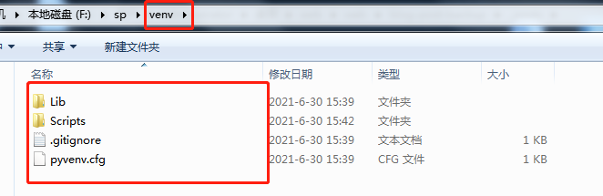</p>
<p><strong>激活虚拟环境</strong>（进入虚拟环境 正常的通过命令pip 安装自己需要的包 安装的包存放在venv中的lib/python/site-packages中）</p>
<p><strong>mac下执行以下命令</strong><br>我的venv的位置在根目录 执行以下命令</p>
<pre><code class="bash">source venv/bin/activate
</code></pre>
<p><strong>windows下 直接用命令行窗口定位到venv\Scripts\  执行以下命令</strong></p>
<pre><code class="bash">activate
</code></pre>
<p><strong>退出虚拟环境</strong>（退出虚拟环境）</p>
<pre><code class="bash">deactivate
</code></pre>
<h4 id="pyside2-安装"><a href="#pyside2-安装" class="headerlink" title="pyside2 安装"></a>pyside2 安装</h4><pre><code class="bash">pip install -i https://pypi.tuna.tsinghua.edu.cn/simple pyside2
</code></pre>
<h4 id="第一个pyside2小案例"><a href="#第一个pyside2小案例" class="headerlink" title="第一个pyside2小案例"></a>第一个pyside2小案例</h4><p>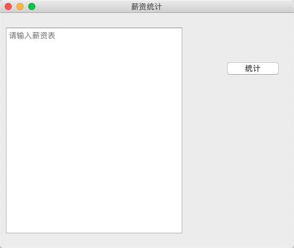</p>
<pre><code class="python">from PySide2.QtWidgets import QApplication, QMainWindow, QPushButton,  QPlainTextEdit

app = QApplication([]) #QApplication 提供了整个图形界面程序的底层管理功能

window = QMainWindow() #创建Windows控件
window.resize(500, 400) #定义窗口大小
window.move(300, 310) #定义窗口的位置
window.setWindowTitle(&#39;薪资统计&#39;) # 定义窗口的标题

textEdit = QPlainTextEdit(window) #创建文本编辑框
textEdit.setPlaceholderText(&quot;请输入薪资表&quot;) #显示默认语句
textEdit.move(10,25)
textEdit.resize(300,350)

button = QPushButton(&#39;统计&#39;, window) #创建按钮
button.move(380,80)

window.show() #显示窗口

app.exec_() # 进入QApplication的事件处理循环，接收用户的输入事件（），并且分配给相应的对象去处理
</code></pre>
<p><strong>统计按钮的事件绑定</strong></p>
<pre><code class="python">def handleCalc():
    print(&#39;统计按钮被点击了&#39;)

button.clicked.connect(handleCalc) #用户点击按钮的时候触发handlecalc方法
</code></pre>
<p><strong>获取编辑框的文本(toPlainText)</strong></p>
<pre><code class="python">text = edit.toPlainText()
</code></pre>
<p>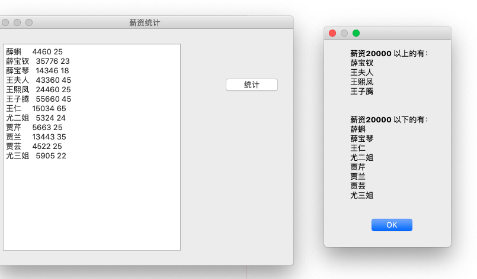</p>
<pre><code class="python">from PySide2.QtWidgets import QApplication, QMainWindow, QPushButton,  QPlainTextEdit,QMessageBox

class Stats():
    def __init__(self):
        self.window = QMainWindow()
        self.window.resize(500, 400)
        self.window.move(300, 300)
        self.window.setWindowTitle(&#39;薪资统计&#39;)

        self.textEdit = QPlainTextEdit(self.window)
        self.textEdit.setPlaceholderText(&quot;请输入薪资表&quot;)
        self.textEdit.move(10, 25)
        self.textEdit.resize(300, 350)

        self.button = QPushButton(&#39;统计&#39;, self.window)
        self.button.move(380, 80)

        self.button.clicked.connect(self.handleCalc)


    def handleCalc(self):
        info = self.textEdit.toPlainText()

        # 薪资20000 以上 和 以下 的人员名单
        salary_above_20k = &#39;&#39;
        salary_below_20k = &#39;&#39;
        for line in info.splitlines():
            if not line.strip():
                continue
            parts = line.split(&#39; &#39;)
            # 去掉列表中的空字符串内容
            parts = [p for p in parts if p]
            name,salary,age = parts
            if int(salary) &gt;= 20000:
                salary_above_20k += name + &#39;\n&#39;
            else:
                salary_below_20k += name + &#39;\n&#39;

        QMessageBox.about(self.window,
                    &#39;统计结果&#39;,
                    f&#39;&#39;&#39;薪资20000 以上的有：\n{salary_above_20k}
                    \n薪资20000 以下的有：\n{salary_below_20k}&#39;&#39;&#39;
                    )

app = QApplication([])
stats = Stats()
stats.window.show()
app.exec_()
</code></pre>
<h4 id="用Designer来编辑窗口界面"><a href="#用Designer来编辑窗口界面" class="headerlink" title="用Designer来编辑窗口界面"></a>用Designer来编辑窗口界面</h4><p>前面的代码都是手动定义按键的位置的 这样太麻烦了 我们可以用界面设计师来完成界面的设计</p>
<p>我是用虚拟环境安装的  安装了pyside2后  在site-packages中的pyside2文件中会找到<br>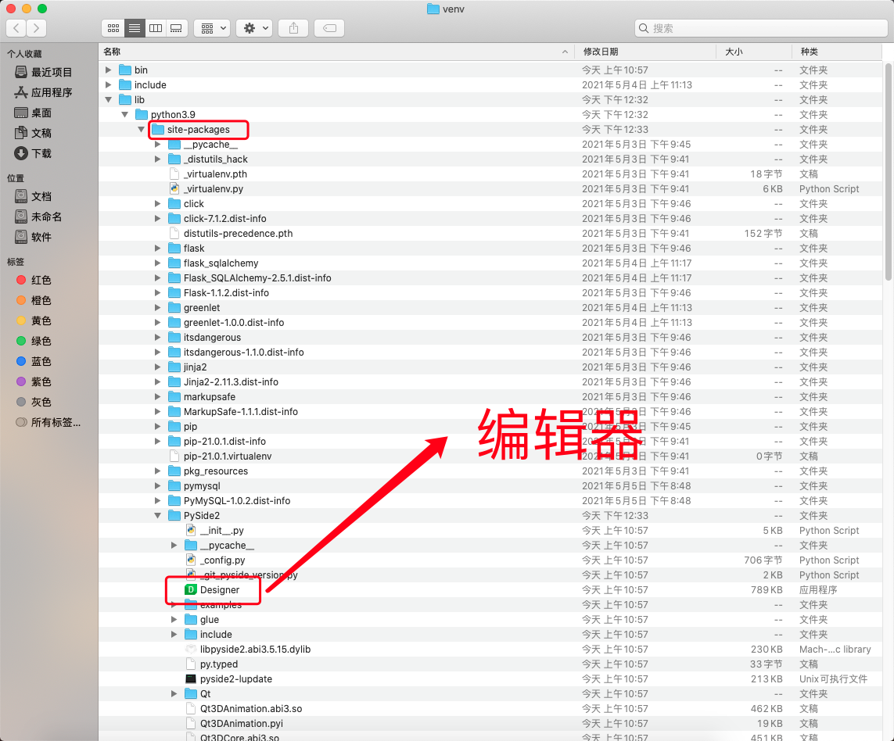</p>
<p>打开的界面如下<br>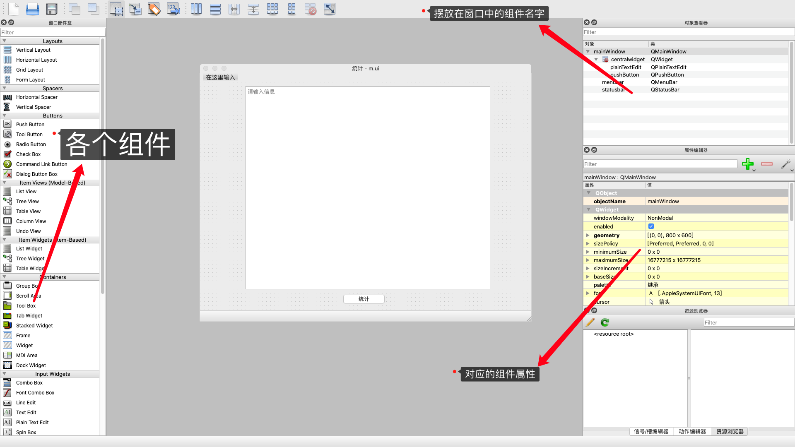</p>
<p>把要用到的组件往界面拖就是了  很简单<br>当你把组件放上去 你会发现 有些很难对齐 即使对齐了 界面拖到后 不会自动改变自己的大小  这时候我们就用到布局</p>
<p>Qt是通过界面布局Layout类来实现这种功能的。<br>我们最常用的 Layout布局 有4种，分别是<br>QHBoxLayout 水平布局<br>QHBoxLayout 把控件从左到右 水平横着摆放<br>QVBoxLayout 垂直布局<br>QHBoxLayout 把控件从上到下竖着摆放<br>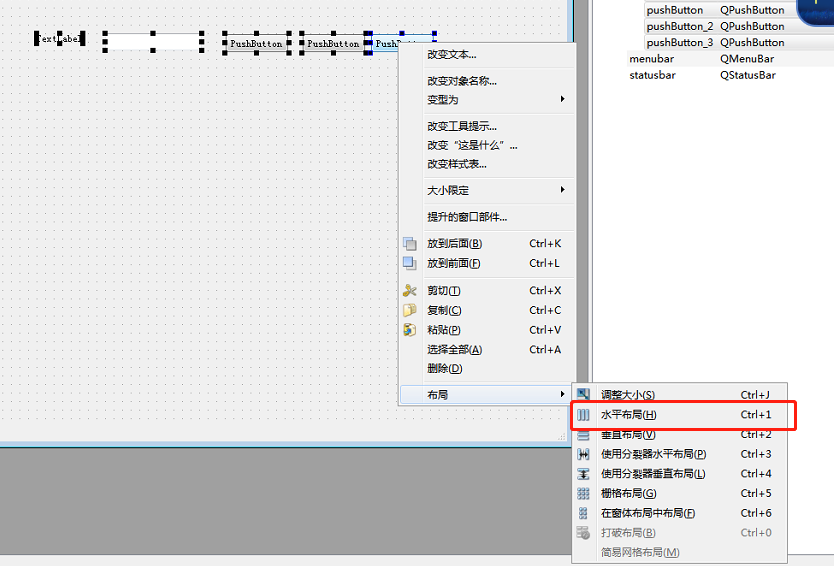<br>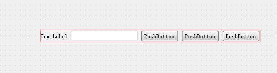</p>
<p>QGridLayout 栅格布局<br>QGridLayout 把多个控件 按表格布局<br>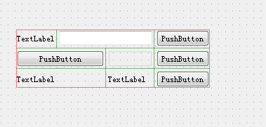</p>
<p><strong>对界面布局的一些建议</strong><br>先不使用任何layout，所有控件按自己喜欢的位置往上摆<br>然后在从内层开始布局 在到外层<br>最后通过layout控件大小比例来控制位置<strong>layoutstrentch</strong><br>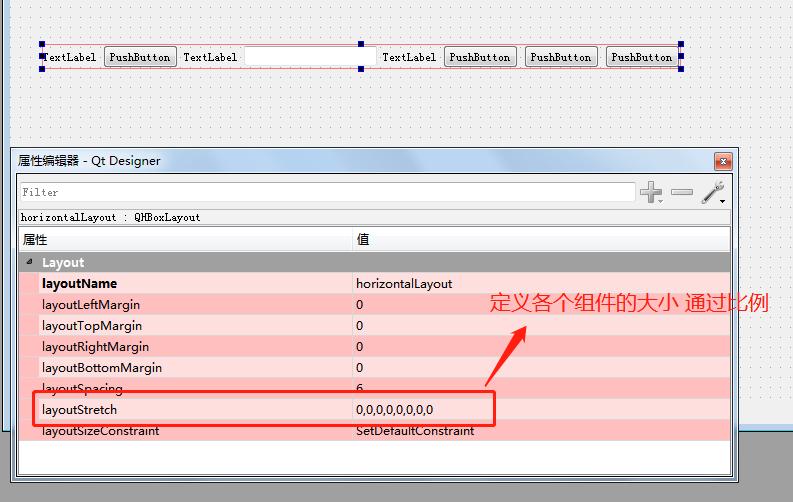</p>
<p>设置好后保存后 会有一个UI文件<br>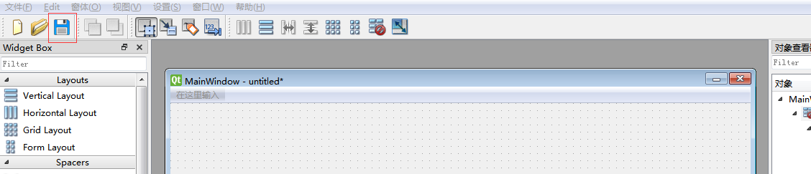</p>
<p><strong>用python代码来加载刚创建的ui文件</strong><br>加载界面文件</p>
<pre><code class="python">ui = QUiLoader().load(&#39;m.ui&#39;)  
</code></pre>
<p>里面的控件对象也成为窗口对象的属性了 可以通过代码定位到组件 比如我想把按钮添加一个方法</p>
<pre><code class="python"> ui.pushButton.clicked.connect(self.handleCalc) 
</code></pre>
<p>属性叫什么名字 都是自己定义的 比如这个按钮就是 ui.pushButton_5<br>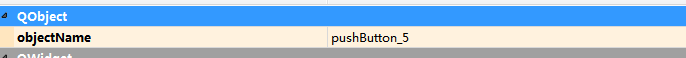</p>
<h4 id="一个小的案例"><a href="#一个小的案例" class="headerlink" title="一个小的案例"></a>一个小的案例</h4><p>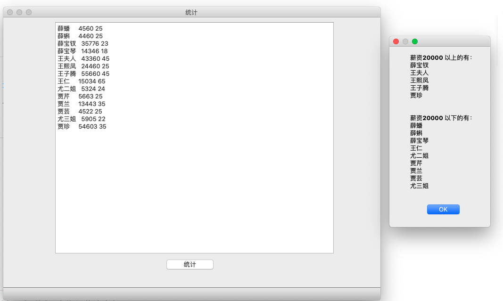</p>
<pre><code class="python">from PySide2.QtWidgets import QApplication, QMessageBox
from PySide2.QtUiTools import QUiLoader

class Stats:

    def __init__(self):
        # 从文件中加载UI定义

        # 从 UI 定义中动态 创建一个相应的窗口对象
        # 注意：里面的控件对象也成为窗口对象的属性了
        # 比如 self.ui.button , self.ui.textEdit
        self.ui = QUiLoader().load(&#39;m.ui&#39;)

        self.ui.pushButton.clicked.connect(self.handleCalc)

    def handleCalc(self):
        info = self.ui.plainTextEdit.toPlainText()

        salary_above_20k = &#39;&#39;
        salary_below_20k = &#39;&#39;
        for line in info.splitlines():
            if not line.strip():
                continue
            parts = line.split(&#39; &#39;)

            parts = [p for p in parts if p]
            name,salary,age = parts
            if int(salary) &gt;= 20000:
                salary_above_20k += name + &#39;\n&#39;
            else:
                salary_below_20k += name + &#39;\n&#39;

        QMessageBox.about(self.ui,
                    &#39;统计结果&#39;,
                    f&#39;&#39;&#39;薪资20000 以上的有：\n{salary_above_20k}
                    \n薪资20000 以下的有：\n{salary_below_20k}&#39;&#39;&#39;
                    )

app = QApplication([])
stats = Stats()
stats.ui.show()
app.exec_()
</code></pre>
<h4 id="常用组件"><a href="#常用组件" class="headerlink" title="常用组件"></a>常用组件</h4><h5 id="QPushButton-按钮"><a href="#QPushButton-按钮" class="headerlink" title="QPushButton 按钮"></a>QPushButton 按钮</h5><p>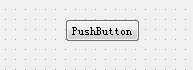</p>
<ol>
<li><strong>被点击</strong><pre><code class="python">pushButton.clicked.connect(handleCalc) #handleCalc是一个方法的名字 负责处理点击后执行的内容
</code></pre>
</li>
<li><strong>改变按键的的文本</strong><pre><code class="python">pushButton.setText(text) #text 字符串  要定义的文本
</code></pre>
</li>
<li><strong>把按键禁用和启用</strong><pre><code class="python">pushButton.setEnabled(False) #禁用
pushButton.setEnabled(True) #启用
</code></pre>
<h5 id="单行文本框"><a href="#单行文本框" class="headerlink" title="单行文本框"></a>单行文本框</h5>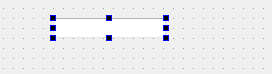</li>
<li><strong>文本被修改</strong><br>当文本框中的内容被键盘编辑，被点击就会发出 textChanged 信号，可以这样指定处理该信号的函数<pre><code class="python">edit.textChanged.connect(handleTextChange) #handleTextChange 是一个方法的名字 负责处理
</code></pre>
</li>
<li><strong>按下回车键</strong><br>当用户在文本框中任何时候按下回车键，就会发出 returnPressed 信号<pre><code class="python">passwordEdit.returnPressed.connect(onLogin) # onLogin 是一个方法的名字 负责处理
</code></pre>
</li>
<li><strong>获取文本</strong><br>通过 text 方法获取编辑框内的文本内容，比如<pre><code class="python">text = edit.text()
</code></pre>
</li>
<li><strong>设置提示</strong><br>通过 setPlaceholderText 方法可以设置提示文本内容，比如<pre><code class="python">edit.setPlaceholderText(&#39;请在这里输入URL&#39;)
</code></pre>
</li>
<li><strong>设置文本</strong><pre><code class="python">edit.setText(&#39;填入你要写的文本&#39;)
</code></pre>
</li>
<li><strong>清除所有文本</strong><pre><code class="python">edit.clear()
</code></pre>
</li>
<li><strong>拷贝文本到剪贴板</strong><pre><code class="python">edit.copy()
</code></pre>
</li>
<li><strong>粘贴剪贴板文本</strong><pre><code class="python">edit.paste()
</code></pre>
<h5 id="多行纯文本框"><a href="#多行纯文本框" class="headerlink" title="多行纯文本框"></a>多行纯文本框</h5>QPlainTextEdit 是可以 多行 的纯文本编辑框<br>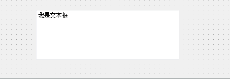<br>注意：在苹果MacOS上，有 更新文本框内容后，需要鼠标滑过才能更新显示的bug</li>
<li><strong>文本被修改</strong><br>当文本框中的内容被键盘编辑，被点击就会发出 textChanged 信号，可以这样指定处理该信号的函数<pre><code class="python">edit.textChanged.connect(handleTextChange)
</code></pre>
</li>
<li><strong>光标位置改变</strong><br>当文本框中的光标位置变动，就会发出 cursorPositionChanged 信号，可以这样指定处理该信号的函数<pre><code class="python">edit.cursorPositionChanged.connect(handleChanged)
</code></pre>
</li>
<li><strong>获取文本</strong><br>通过 toPlainText 方法获取编辑框内的文本内容，比如<pre><code class="python">text = edit.toPlainText()
</code></pre>
</li>
<li><strong>获取选中文本</strong><pre><code class="python"># 获取 QTextCursor 对象
textCursor = edit.textCursor()
selection = textCursor.selectedText()
</code></pre>
</li>
<li><strong>设置提示</strong><pre><code class="python">edit.setPlaceholderText(&#39;请在这里输入&#39;)
</code></pre>
</li>
<li><strong>设置文本</strong><br>通过 setPlainText 方法设置编辑框内的文本内容 为参数里面的文本字符串，比如<pre><code class="python">edit.setPlainText(&#39;hello&#39;)# 原来的所有内容会被清除
</code></pre>
</li>
<li><strong>在末尾添加文本</strong><br>通过 appendPlainText 方法在编辑框末尾添加文本内容，比如<pre><code class="python">edit.appendPlainText(&#39;末尾添加文本内容&#39;) # 注意：这种方法会在添加文本后 自动换行
</code></pre>
</li>
<li><strong>在光标处插入文本</strong><br>通过 insertPlainText 方法在编辑框末尾添加文本内容，比如<pre><code class="python">edit.insertPlainText(&#39;末尾添加文本内容&#39;) # 注意：这种方法 不会 在添加文本后自动换行
</code></pre>
</li>
<li><strong>清除所有文本</strong><br>clear 方法可以清除编辑框内所有的文本内容，比如<pre><code class="python">edit.clear() 
</code></pre>
</li>
<li><strong>拷贝文本到剪贴板</strong><br>copy 方法可以拷贝当前选中文本到剪贴板，比如<pre><code class="python">edit.copy()
</code></pre>
</li>
<li><p><strong>粘贴剪贴板文本</strong><br>paste 方法可以把剪贴板内容，拷贝到编辑框当前光标所在处，比如</p>
<pre><code class="python">edit.paste()
</code></pre>
<h5 id="文本浏览框"><a href="#文本浏览框" class="headerlink" title="文本浏览框"></a>文本浏览框</h5><p>QTextBrowser 是 只能查看文本 控件。<br>通常用来显示一些操作日志信息、或者不需要用户编辑的大段文本内容。<br>该控件 获取文本、设置文本、清除文本、剪贴板复制粘贴 等等， 都和上面介绍的 多行纯文本框是一样的。</p>
</li>
<li><p><strong>在末尾添加文本</strong><br>通过 append 方法在编辑框末尾添加文本内容，比如</p>
<pre><code class="python">textBrowser.append(&#39;末尾添加文本内容&#39;)
</code></pre>
<p>有时，浏览框里面的内容长度超出了可见范围，我们在末尾添加了内容，往往希望控件自动翻滚到当前添加的这行，<br>可以通过 ensureCursorVisible 方法来实现</p>
<pre><code class="python">textBrowser.append(&#39;末尾添加文本内容&#39;)
textBrowser.ensureCursorVisible() #注意：这种方法会在添加文本后 自动换行
</code></pre>
</li>
<li><p><strong>在光标处插入文本</strong><br>通过 insertPlainText 方法在编辑框末尾添加文本内容，比如</p>
<pre><code class="python">edit.insertPlainText(&#39;添加文本内容&#39;) # 这种方法 不会 在添加文本后自动换行
</code></pre>
<h5 id="标签"><a href="#标签" class="headerlink" title="标签"></a>标签</h5><p>QLabel 就是常见的标签，可以用来显示文字（包括纯文本和富文本）、图片 甚至动画<br>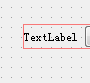</p>
</li>
<li><p><strong>改变文本</strong><br>代码中可以使用 setText 方法来改变标签文本内容，比如</p>
<pre><code class="python">button.setText(text)
</code></pre>
</li>
<li><strong>图片</strong><br>QLabel可以用来显示图片，有时一个图片可以让界面好看很多，可以在 Qt Designer上 属性编辑器 QLabel 栏 的 pixmap 属性设置中选择图片文件指定。<br>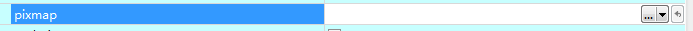</li>
</ol>
<h5 id="组合选择框"><a href="#组合选择框" class="headerlink" title="组合选择框"></a>组合选择框</h5><p>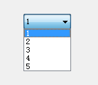</p>
<ol>
<li><strong>选项改变</strong><br>如果用户操作修改了QComboBox中的选项就会发出 currentIndexChanged 信号，可以这样指定处理该信号的函数<pre><code class="python">cbox.currentIndexChanged.connect(handleSelectionChange)
</code></pre>
</li>
<li><strong>添加一个选项</strong><br>代码中可以使用 addItem 方法来添加一个选项到 末尾 ，参数就是选项文本<pre><code class="python">cbox.addItem(&#39;byhy&#39;)
</code></pre>
</li>
<li><strong>添加多个选项</strong><br>代码中可以使用 addItems 方法来添加多个选项到 末尾，参数是包含了多个选项文本的列表<pre><code class="python">cbox.addItems([&#39;java&#39;,&#39;c++&#39;,&#39;python教程&#39;])
</code></pre>
</li>
<li><strong>清空选项</strong><br>代码中可以使用 clear 方法来清空选项，也就是删除选择框内所有的选项<pre><code class="python">cbox.clear()
</code></pre>
</li>
<li><p><strong>获取当前选项文本</strong><br>代码中可以使用 currentText 方法来获取当前 选中的选项 的文本，比如</p>
<pre><code class="python">method = cbox.currentText()
</code></pre>
<h5 id="列表"><a href="#列表" class="headerlink" title="列表"></a>列表</h5><p>QListWidget 是列表控件，如下图所示<br>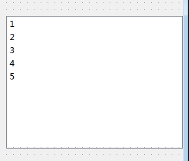</p>
</li>
<li><p><strong>添加一个选项</strong><br>代码中可以使用 addItem 方法来添加一个选项到 末尾 ，参数就是选项文本</p>
<pre><code class="python">listWidget.addItem(&#39;helo&#39;)
</code></pre>
</li>
<li><strong>添加多个选项</strong><br>代码中可以使用 addItems 方法来添加多个选项到 末尾，参数是包含了多个选项文本的列表<pre><code class="python">listWidget.addItems([&#39;go,&#39;java&#39;,&#39;python教程&#39;])
</code></pre>
</li>
<li><strong>删除一个选项</strong><br>代码中可以使用 takeItem 方法来删除1个选项，参数是该选项所在行<pre><code class="python">listWidget.takeItem(1) #就会删除第二行选项
</code></pre>
</li>
<li><strong>清空选项</strong><br>代码中可以使用 clear 方法来清空选项，也就是删除选择框内所有的选项<pre><code class="python">listWidget.clear()
</code></pre>
</li>
<li><strong>获取当前选项文本</strong><br>currentItem 方法可以得到列表当前选中项对象（QListWidgetItem） ，再调用这个对象的 text 方法，就可以获取文本内容，比如<pre><code class="python">listWidget.currentItem().text() # 就获取了 第1行，第1列 的单元格里面的文本。
</code></pre>
<h5 id="表格"><a href="#表格" class="headerlink" title="表格"></a>表格</h5>QTableWidget 是表格控件，如下图所示<br>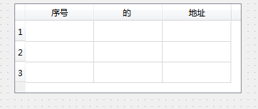</li>
</ol>
<p><strong>创建列 和 标题栏</strong><br>我们可以通过 Qt designer 为一个表格创建列和对应的标题栏。<br>只需要双击 Qt designer 设计的窗体中的 表格控件， 就会出现这样的对话框。<br>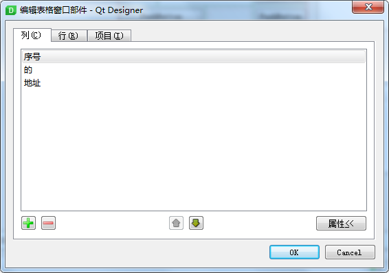</p>
<ol>
<li><strong>插入一行、删除一行</strong><br>insertRow 方法可以在指定位置插入一行，比如<pre><code class="python">table.insertRow(0) # 就插入一行到第 1 行这个位置， 表格原来第1行（包括原来的第1行）以后的内容，全部往下移动一行。
</code></pre>
removeRow 方法可以删除指定位置的一行，比如<pre><code class="python">table.removeRow(0) # 就插入一行到第 1 行这个位置， 表格原来第1行（包括原来的第1行）以后的内容，全部往下移动一行。
</code></pre>
</li>
<li><strong>设置单元格文本内容</strong><br>qt表格的单元格内的内容对象 是一个 单元格对象 QTableWidgetItem 实例<br>如果单元格 没有被设置过 内容，可以这样<pre><code class="python">from PySide2.QtWidgets import QTableWidgetItem
table.setItem(0, 0, QTableWidgetItem(&#39;hello&#39;))# 0行0列添加文本hello
</code></pre>
如果希望某个单元格为 只读，不允许修改，可以使用QTableWidgetItem对象的 setFlags 方法，像这样<br><code>`</code>python<br>from PySide2.QtWidgets import QTableWidgetItem<br>from PySide2.QtCore import Qt</li>
</ol>
<p>item = QTableWidgetItem(‘hello’)<br>item.setFlags(Qt.ItemIsEnabled) # 参数名字段不允许修改<br>table.setItem(row, 0, item)</p>
<pre><code>如果想文本内容 居中对齐，每个当对应的QTableWidgetItem 调用 setTextAlignment，如下
```python
from PySide2.QtWidgets import QTableWidgetItem
from PySide2.QtCore import Qt

item = QTableWidgetItem()
item.setText(&#39;hello&#39;)
# 文本居中
item.setTextAlignment(Qt.AlignHCenter) 
table.setItem(row, 0, item)
</code></pre><ol start="3">
<li><strong>获取单元格文本的内容</strong><br>item 方法可以指定位置的单元格对象（QTableWidgetItem） ，再调用这个对象的 text 方法，就可以获取文本内容，比如<pre><code class="python">table.item(0,0).text()
</code></pre>
</li>
<li><strong>获取所有行数、列数</strong><br>代码中可以使用 rowCount 方法来获取表格所有的 行数 ，比如<pre><code class="python">rowcount = table.rowCount()
</code></pre>
可以使用 columnCount 方法来获取表格所有的 列数 ，比如<pre><code class="python">rowcount = table.columnCount()
</code></pre>
</li>
<li><strong>获取当前选中是第几行</strong><br>代码中可以使用 currentRow 方法来获取当前选中是第几行，比如<pre><code class="python">currentrow = table.currentRow()
</code></pre>
获取选中的行的内容<pre><code class="python">table.selectedItems()
</code></pre>
</li>
<li><strong>设置表格行数、列数</strong><br>代码中可以使用 setRowCount 方法来设置表格 行数 ，比如<pre><code class="python">table.setRowCount(10)
</code></pre>
代码中可以使用 setColumnCount 方法来设置表格 列数 ，比如<pre><code class="python">table.setColumnCount(10)
</code></pre>
</li>
<li><strong>清除/删除所有内容</strong><br>clearContents 方法可以清除表格所有的内容，比如<pre><code class="python">table.clearContents()
</code></pre>
清除后，仍然会留下表格栏<br>如果连表格栏都要删除，可以使用 setRowCount(0)，像这样<pre><code class="python">table.setRowCount(0)
</code></pre>
</li>
<li><strong>设定列宽、宽度自动缩放</strong><br>Qt Designer 上目前没法拖拽设定 每个列的宽度，只能在代码中指定。<br>如下所示<pre><code class="python">table.clearContents()
</code></pre>
清除后，仍然会留下表格栏<br>如果连表格栏都要删除，可以使用 setRowCount(0)，像这样<br><code>`</code>python<h1 id="设定第1列的宽度为-180像素"><a href="#设定第1列的宽度为-180像素" class="headerlink" title="设定第1列的宽度为 180像素"></a>设定第1列的宽度为 180像素</h1>table.setColumnWidth(0, 180)</li>
</ol>
<h1 id="设定第2列的宽度为-100像素"><a href="#设定第2列的宽度为-100像素" class="headerlink" title="设定第2列的宽度为 100像素"></a>设定第2列的宽度为 100像素</h1><p>table.setColumnWidth(1, 100)</p>
<pre><code>如想让 表格控件宽度 随着父窗口的缩放自动缩放，可以
```python
table.horizontalHeader().setStretchLastSection(True)
</code></pre><ol start="9">
<li><p><strong>单元格内容改动</strong><br>当用户修改了一个单元格的内容，会发出 cellChanged 信号，并且携带参数指明该单元格的行号和列号。<br>我们的代码可以对该信号进行相应的处理。<br>示例代码如下</p>
<pre><code class="python">def __init__(self):
     # 指定单元格改动信号处理函数
     self.ui.table.cellChanged.connect(self.cfgItemChanged)

 def cfgItemChanged(self,row,column):
     # 获取更改内容
     cfgName = self.ui.table.item(row, 0).text() # 首列为配置名称
     cfgValue = self.ui.table.item(row, column).text()
</code></pre>
</li>
</ol>

        </div>
        <!-- .entry-content -->
        <div class="single-reward">
          <div class="reward-open">赏
            <div class="reward-main">
              <ul class="reward-row">
                <li class="alipay-code"></li>
                <li class="wechat-code"></li>
              </ul>
            </div>
          </div>
        </div>
        <div style="text-align:center; width: 100%" class="social-share share-mobile" data-disabled="diandian, tencent"></div>
        <footer class="post-footer">
          <div class="post-lincenses"><a href="https://creativecommons.org/licenses/by-nc-sa/4.0/deed.zh" target="_blank" rel="nofollow"><i class="fa fa-creative-commons" aria-hidden="true"></i> 知识共享署名-非商业性使用-相同方式共享 4.0 国际许可协议</a></div>
          <div class="post-tags">
          </div>
          <div class="post-share">
            <div class="social-share sharehidden share-component"></div>
            <i class="iconfont show-share icon-forward"></i>
          </div>
        </footer><!-- .entry-footer -->
      </article>
      <!-- #post-## -->
      <div class="toc" style="background: none;"></div>
      <section class="post-squares nextprev">
        
        
          
            <div class="post-nepre full next">
          
            <a href="/2021/06/25/编程思想/" rel="next">
              <div class="background">
                
              </div>
              <span class="label">
              Next Post</span>
              <div class="info">
                <h3>
                编程的方法（编辑中）</h3>
                <hr>
              </div>
            </a>
          </div>
        
      </section>
      
<div id="vcomments"></div>
<script>
  window.onload = function(){
      var valine = new Valine();
      valine.init({
        el: '#vcomments',
        appId: "eBIOWlNSti1cF7QQKTdnAMF5-gzGzoHsz",
        appKey: "vWB0QiSYnTUHzNWujmBXrXBF",
        path: window.location.pathname,
        placeholder: "你是我一生只会遇见一次的惊喜 ..."
      })
  }
</script>

      <section class="author-profile">
        <div class="info" itemprop="author" itemscope="" itemtype="https://schema.org/Person">
          <a href="" class="profile gravatar"></a>
          <div class="meta">
            <span class="title">Author</span>
            <h3 itemprop="name">
            <a href="" itemprop="url" rel="author">lovelves</a>
            </h3>
          </div>
        </div>
        <hr>
        <p><i class="iconfont icon-write"></i>一个好奇的人</p>
      </section>
    </main><!-- #main -->
  </div><!-- #primary -->
</div>


    </div>    
    <div class="ins-search">
    <div class="ins-search-mask"></div>
    <div class="ins-search-container">
        <div class="ins-input-wrapper">
            <input type="text" class="ins-search-input" placeholder="请输入关键词..."/>
            <span class="ins-close ins-selectable"><i class="fa fa-times-circle"></i></span>
        </div>
        <div class="ins-section-wrapper">
            <div class="ins-section-container"></div>
        </div>
    </div>
</div>
<script>
(function (window) {
    var INSIGHT_CONFIG = {
        TRANSLATION: {
            POSTS: '文章',
            // PAGES: '页面',
            CATEGORIES: '分类',
            TAGS: '标签',
        },
        ROOT_URL: '/',
        CONTENT_URL: '/content.json',
    };
    window.INSIGHT_CONFIG = INSIGHT_CONFIG;
})(window);
</script>
    <!-- <footer id="footer">
  
  <div class="outer">
    <div id="footer-info" class="inner">
      &copy; 2021 lovelves<br>
      powered_by <a href="http://hexo.io/" target="_blank">Hexo</a>
    </div>
  </div>
</footer> -->
<footer id="colophon" class="site-footer" role="contentinfo">
  <div class="site-info">
    <div class="footertext">
      <div class="img-preload">
        
        
      </div>
      <p style="color: #666666;">© 2021 lovelves</p>
      <p style="color: #666666;" id="page_loading_time"></p>
    </div>
   
    
    <span id="showDays">我和你邂逅已经240天了，耶</span>
    <script>
    var birthDay = new Date("06/13/2021");  // 这里填写网站第一次运行日期
    var now = new Date();
    var duration = now.getTime() - birthDay.getTime(); 
    var total= Math.floor(duration / (1000 * 60 * 60 * 24));
    document.getElementById("showDays").innerHTML = "我和你邂逅已经"+total+"天了，耶"; //这里就是总运行天数
    </script>
    <p style="font-family: 'Ubuntu', sans-serif;">
        <span style="color: #b9b9b9;">Theme <a href="https://github.com/honjun/hexo-theme-sakura" target="_blank" style="color: #b9b9b9;;text-decoration: underline dotted rgba(0, 0, 0, .1);">Sakura</a> <i class="iconfont icon-sakura rotating" style="color: #ffc0cb;display:inline-block"></i> by <a href="https://2heng.xin/" target="_blank" style="color: #b9b9b9;;text-decoration: underline dotted rgba(0, 0, 0, .1);">Mashiro</a>&amp;<a href="https://www.hojun.cn/" target="_blank" style="color: #b9b9b9;;text-decoration: underline dotted rgba(0, 0, 0, .1);">Hojun</a>
        </span>
      </p>
   <div class="github-badge">
      <a style="color: #fff" rel="license" href="https://hexo.io/" target="_blank" title="由 Hexo 强力驱动">
      <span class="badge-subject">Powered</span><span class="badge-value bg-blue">Hexo</span></a>
    </div>
    <div class="github-badge">
      <a style="color: #fff" rel="license" href="https://www.aliyun.com/" target="_blank" title="静态网页托管于阿里云服务器">
      <span class="badge-subject">Hosted</span><span class="badge-value bg-red">Aliyun</span></a>
    </div>
    <div class="github-badge">
      <a style="color: #fff" rel="license" href="https://www.aliyun.com/" target="_blank" title="阿里云提供域名相关服务">
      <span class="badge-subject">DNS</span><span class="badge-value bg-red">Aliyun</span></a>
    </div>
    <div class="github-badge">
      <a style="color: #fff" rel="license" href="https://www.jsdelivr.com/" target="_blank" title="jsDelivr 提供 CDN 加速服务">
      <span class="badge-subject">CDN</span><span class="badge-value bg-brightgreen">jsDelivr</span></a>
    </div>
    <div class="skin-menu no-select" id="mainskin"  style="position: fixed">
      <div class="theme-controls row-container">
          <ul class="menu-list">
              <li id="white-bg"> <i class="fa fa-television" aria-hidden="true"></i></li>
              <li id="sakura-bg"> <i class="iconfont icon-sakura"></i></li>
              <li id="gribs-bg"> <i class="fa fa-slack" aria-hidden="true"></i></li>
              <li id="KAdots-bg"> <i class="iconfont icon-dots"></i></li>
              <li id="totem-bg"> <i class="fa fa-optin-monster" aria-hidden="true"></i></li>
              <li id="pixiv-bg"> <i class="iconfont icon-pixiv"></i></li>
              <li id="bing-bg"> <i class="iconfont icon-bing"></i></li>
              <li id="dark-bg"> <i class="fa fa-moon-o" aria-hidden="true"></i></li>
          </ul>
      </div>
      <div class="font-family-controls row-container">
          <button type="button" class="control-btn-serif selected" data-mode="serif" onclick="mashiro_global.font_control.change_font()">Serif</button>
          <button type="button" class="control-btn-sans-serif" data-mode="sans-serif" onclick="mashiro_global.font_control.change_font()">Sans Serif</button>
      </div>
  </div>   
  <canvas id="night-mode-cover"></canvas> 
    <div class="changeSkin-gear no-select">
      <div class="keys" id="setbtn"> <span id="open-skinMenu"> 切换壁纸 | SCHEME TOOL 
        &nbsp;<i class="iconfont icon-gear inline-block rotating"></i> </span></div>
    </div>
</footer>


<!-- <script src="/js/tocbot.js"></script> -->
<script type="text/javascript" src="/js/lib.min.js"></script>
<script src="https://cdn.jsdelivr.net/npm/clipboard@2/dist/clipboard.min.js"></script>
<script type="text/javascript" src="/js/InsightSearch.js"></script>
<script type="text/javascript" src="/js/jquery.fancybox.min.js"></script>
<script type="text/javascript" src="/js/zoom.min.js"></script>
<script type="text/javascript" src="/js/sakura-app.js"></script>
<script src="//cdn1.lncld.net/static/js/3.0.4/av-min.js"></script>
<script src='//unpkg.com/valine@1.3.4/dist/Valine.min.js'></script>
<script src="/js/botui.js"></script>

<script type="text/javascript">
/* <![CDATA[ */
if (/Android|webOS|iPhone|iPod|BlackBerry/i.test(navigator.userAgent)) {
  var Poi = {"pjax":"1","movies":{"url": "https://cdn.jsdelivr.net/gh/honjun/hojun@1.2","name":"Unbroken.mp4","live":"close"},"windowheight":"fixed","codelamp":"close","ajaxurl":"","order":"asc","formpostion":"bottom"};
} else {
  var Poi = {"pjax":"1","movies":{"url": "https://cdn.jsdelivr.net/gh/honjun/hojun@1.2","name":"Unbroken.mp4","live":"open"},"windowheight":"auto","codelamp":"close","ajaxurl":"","order":"asc","formpostion":"bottom"};
}
/* ]]> */

</script>
<script>
$(document).ready(function() {
  if ($(".toc").length > 0 && document.body.clientWidth > 1200) {
    if ($(".pattern-center").length > 0) { //有图的情况
      tocbot.init({
          // Where to render the table of contents.
          tocSelector: '.toc', // 放置目录的容器
          // Where to grab the headings to build the table of contents.
          contentSelector: '.entry-content', // 正文内容所在
          // Which headings to grab inside of the contentSelector element.
          scrollSmooth: true,
          headingSelector: 'h1, h2, h3, h4, h5', // 需要索引的标题级别
          headingsOffset: -400,
          scrollSmoothOffset: -85
      });
    } else {
      tocbot.init({
          // Where to render the table of contents.
          tocSelector: '.toc', // 放置目录的容器
          // Where to grab the headings to build the table of contents.
          contentSelector: '.entry-content', // 正文内容所在
          // Which headings to grab inside of the contentSelector element.
          scrollSmooth: true,
          headingSelector: 'h1, h2, h3, h4, h5', // 需要索引的标题级别
          headingsOffset: -85,
          scrollSmoothOffset: -85
      });
    }
    var offsetTop = $('.toc').offset().top - 95;
    window.onscroll = function() {
      var scrollTop = window.pageYOffset || document.documentElement.scrollTop || document.body.scrollTop;
      if (scrollTop >= offsetTop) {
        $('.toc').addClass('toc-fixed');
      } else {
        $('.toc').removeClass('toc-fixed');
      }
    }
  }
});
</script>

    <div class="openNav no-select" style="height: 50px;">
      <div class="iconflat no-select" style="width: 50px; height: 50px;">
        <div class="icon"></div>
      </div>
      <div class="site-branding search-form-submit">
        <i class="iconfont js-toggle-search iconsearch icon-search"></i>
      </div>
    </div>
  </section>
  <div id="mo-nav" class="">
  <div class="m-avatar">
    
  </div>
  <p style="text-align: center; color: #333; font-weight: 900; font-family: 'Ubuntu', sans-serif; letter-spacing: 1.5px">lovelves的博客</p>
  <p style="text-align: center; word-spacing: 20px;">
    
  </p>
  <ul id="menu-new-1" class="menu">
    
      <li>
        <a href="/">
          <span class="faa-parent animated-hover">
            <i class="fa  fa-fort-awesome faa-shake" aria-hidden="true"></i>
            首页
          </span>
        </a>
        
      </li>
    
      <li>
        <a href="/archives">
          <span class="faa-parent animated-hover">
            <i class="fa  fa-archive faa-shake" aria-hidden="true"></i>
            归档
          </span>
        </a>
        
          <ul class="sub-menu">
            
              <li>
                <a href="/categories/技术/">
                  <i class="fa fa-code" aria-hidden="true"></i>
                  技术
                </a>
              </li>
            
          </ul>
        
      </li>
    
      <li>
        <a href="javascript:;">
          <span class="faa-parent animated-hover">
            <i class="fa  fa-list-ul faa-vertical" aria-hidden="true"></i>
            清单
          </span>
        </a>
        
          <ul class="sub-menu">
            
              <li>
                <a href="/booklist/">
                  <i class="fa fa-th-list faa-bounce" aria-hidden="true"></i>
                  笔记
                </a>
              </li>
            
              <li>
                <a href="/bangumi/">
                  <i class="fa fa-film faa-vertical" aria-hidden="true"></i>
                  番组
                </a>
              </li>
            
          </ul>
        
      </li>
    
      <li>
        <a href="/">
          <span class="faa-parent animated-hover">
            <i class="fa  fa-leaf faa-wrench" aria-hidden="true"></i>
            关于
          </span>
        </a>
        
          <ul class="sub-menu">
            
              <li>
                <a href="/about/">
                  <i class="fa fa-meetup" aria-hidden="true"></i>
                  我？
                </a>
              </li>
            
          </ul>
        
      </li>
    
      <li>
        <a href="/atom.xml">
          <span class="faa-parent animated-hover">
            <i class="fa  fa-rss faa-pulse" aria-hidden="true"></i>
            RSS
          </span>
        </a>
        
      </li>
    
  </ul>
  <p style="text-align: center; font-size: 13px; color: #b9b9b9;">&copy 2019 hexo-sakura</p>
</div>
<button onclick="topFunction()" class="mobile-cd-top" id="moblieGoTop" title="Go to top" style="display: none;"><i class="fa fa-chevron-up" aria-hidden="true"></i></button>
  <link rel="stylesheet" href="https://cdn.jsdelivr.net/npm/aplayer/dist/APlayer.min.css">
<script src="https://cdn.jsdelivr.net/npm/aplayer/dist/APlayer.min.js"></script>
<!-- require MetingJS -->
<script src="https://cdn.jsdelivr.net/npm/meting@2/dist/Meting.min.js"></script>
<style>
  .aplayer .aplayer-lrc {
    height: 35px;
  }
  .aplayer .aplayer-lrc p{
    font-size: 16px;
    font-weight: 700;
    line-height: 18px !important;
  }
  .aplayer .aplayer-lrc p.aplayer-lrc-current{
    color: #FF1493;
  }
  .aplayer.aplayer-narrow .aplayer-body{
    left: -66px !important;
  }
  .aplayer.aplayer-fixed .aplayer-lrc {
    display: none;
  }
  .aplayer .aplayer-lrc.aplayer-lrc-hide {
      display:none !important;
  }
  .aplayer.aplayer-fixed .lrc-show {
    display: block;
    background: rgba(255, 255, 255, 0.8);
  }
</style>
<meting-js

</meting-js>
<script>
  $(function(){
    $('body').on('click', '.aplayer', function(){
      if($('.aplayer-button').hasClass('aplayer-play')) {
        $('.aplayer-lrc').removeClass('lrc-show');
      } else {
        $('.aplayer-lrc').addClass('lrc-show');
      }
    })
  });
</script>
</body>
</html>